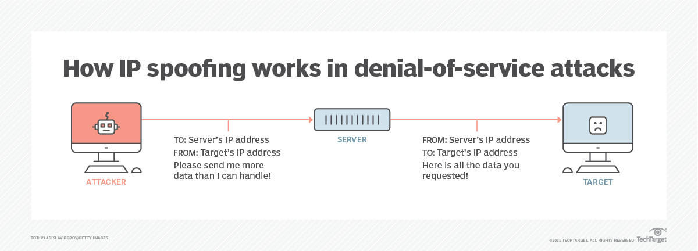

What is Cyber Crime?
Cybercrime is criminal activity that either targets or uses a computer, a computer network or a networked device. Most cybercrime is committed by cybercriminals or hackers who want to make money. However, occasionally cybercrime aims to damage computers or networks for reasons other than profit. These could be political or personal. Cybercrime can be carried out by individuals or organizations. Some cybercriminals are organized, use advanced techniques and are highly technically skilled
Cybercrime refers to any criminal activity that involves a computer or a network, where the computer or network itself is the target, the tool used to commit the crime, or the repository of evidence related to the crime.
Hacking:
Hacking is nothing but identifying weakness in computer systems or networks to exploit it to gain access to its data and sources. Hacking is an attempt to invade a private/public/ corporation/organisations network via computer to gather information without permission.it is the unauthorised or unconsented access to or control over the computer network and security systems for some wrong or illicit needs
These include threats through the web, communications, and email, social media scams, data breaches, cloud and data storage compromises, and critical data breaches.
Malware:
Malware = Malicious + Software (Malicious Software)It refers to any intrusive software developed by cybercriminals (often called hackers) to steal data and damage or destroy computers and computer systems. Examples of common malware include viruses, worms, Trojan viruses, spyware, adware, and ransomware.
Malware is developed as harmful software that invades or corrupts your computer network. The goal of malware is to cause havoc and steal information or resources for monetary gain or sheer sabotage intent.
Data Breach
A data breach is an event that results in confidential, private, protected, or sensitive information being exposed to a person not authorized to access it.Data theft refers to the unauthorized acquisition, copying, or transfer of sensitive or confidential information from a computer system, network, or database. This stolen data can include a wide range of information, such as personal identifiable information (PII), financial records, intellectual property, trade secrets, login credentials, health records, and more
Types of Cyber Crime
Email and indentity fraud
What is E-mail fraud
Email fraud is a type of cybercrime carried out through malicious emails with the intent to damage a business or individual's reputation, typically for monetary gain.How does an email fraud attack work?
Email fraud attacks occur when an individual receives an email that appears to be from a trusted or valid source but is actually from a sham source.Many times, the contents of the email will appeal to the emotions of the target to elicit empathy and prompt them to provide personal details or click a malicious link to obtain sensitive information.
- Phishing: Fraudulent emails or messages that appear to be from legitimate sources, such as banks, government agencies, or reputable organizations, are sent to trick recipients into revealing personal information, such as usernames, passwords, or financial details.
- Business Email Compromise (BEC): Fraudsters compromise legitimate email accounts belonging to employees or executives within organizations to conduct financial fraud, such as unauthorized fund transfers, invoice manipulation, or payroll diversion schemes.
- Romance Scams: Fraudsters create fake online personas on dating websites or social media platforms to establish romantic relationships with individuals, often with the intention of extorting money or personal information from them.
- Tech Support Scams: Fraudulent attempts to trick individuals into believing their computers are infected with malware or experiencing technical issues, prompting them to pay for unnecessary services or provide remote access to their devices.
Types of E-mail fraud
- Use security software and make sure it’s always up to date – this includes your mobile devices and tablet as well.
- Use multi-factor authentication and make your passwords strong and unique.
- Regularly backup your data to the cloud or external hard drive.
Best practices to avoid email fraud?
Cyberextortion
What is Cyberextortion
Cyber extortion occurs when a hacker illegally accesses your organization's sensitive data or systems and then demands money in return for allowing you to either regain control or stop the attack.
If you have an ecommerce site, for example, and a hacker launches a distributed denial-of-service (DDoS) attack, users may be unable to purchase your products or services—not until you pay the amount the hacker is asking for.
- Infiltration :Cybercriminals may use phishing techniques to trick victims into installing malicious software or disclosing sensitive information. They may also exploit vulnerabilities in an organization’s software, hardware, or human factors to gain unauthorized access.
- Installation and Propagation: Once inside a system, the attackers often install malware, such as ransomware, which encrypts the victim’s data. Some malware is designed to spread throughout the network, infecting as many devices and systems as possible to maximize the impact.
- Lockdown and Extortion:With control of the victim’s systems or data, the cybercriminals then make their move. In a ransomware attack, victims realize their data has been encrypted, and they can no longer access it. Then they receive a ransom note demanding payment (usually in a cryptocurrency like Bitcoin) for the decryption key. In a DDoS attack, the cybercriminals will flood the victim’s network with overwhelming traffic, rendering it unavailable. Here, the ransom demand is for the cessation of the attack.
- If the victims choose to pay the ransom , the attackers should provide the means to recover the data or restore the systems. However, there’s no guarantee that cybercriminals will keep their end of the bargain
- Persistence and Repeat: In many cases, attackers maintain a presence within the victim’s system for potential future attacks or to steal more data to sell or use for other malicious purposes. The attacker’s continued presence further underscores the importance of a thorough incident response and system clean-up after an attack.
How Cyber Extortion Works
- Doxing Extortion : In doxing cases, threat actors obtain sensitive, confidential, or embarrassing information about a victim—such as personal photos, emails, or customer data—and threaten to publicly disclose this information unless a ransom is paid. This form of extortion leverages the potential reputational damage to force victims into complying with the extortionists’ demands
- Data Breach Extortion : Like doxing, data breach extortion involves the unauthorized access and exfiltration of sensitive data, but typically at a larger scale, often involving corporations or large entities. Attackers then threaten to release or sell the stolen data unless a ransom is paid. Such data may include proprietary business information, customer data, or any other sensitive information.
- Software Vulnerability Extortion: cybercriminals identify vulnerabilities in a company’s software and demand a ransom for not exposing the vulnerability. Thus, they extort the victim with potential harm from other malicious actors exploiting the vulnerability.
Types of Cyber Extortion
- Colonial Pipeline Attack (2021): DarkSide, a cybercrime group, perpetrated a ransomware attack on the Colonial Pipeline, the largest pipeline system for refined oil products in the U.S. The attack led to the shutdown of the pipeline, sparking widespread fuel shortages and price hikes. This ransomware attack yielded nearly $5 million in ransom paid by Colonial Pipeline to regain control over their systems.
- Garmin Ransomware Attack (2020): In July 2020, Garmin, a multinational technology company, suffered a ransomware attack that left many of its connected services offline for several days. Reports suggest the company may have paid a multimillion-dollar ransom to resolve the issue, although Garmin has not officially confirmed the payment.
- Travelex Ransomware Attack (2020): The foreign exchange company Travelex fell victim to a ransomware attack on New Year’s Eve 2019, which left its services offline for weeks. The attackers demanded $6 million in ransom. Travelex reportedly paid $2.3 million in Bitcoin to regain access to its computer systems.
- Atlanta Ransomware Attack (2018): In March 2018, Atlanta endured a ransomware attack that crippled several critical systems, affecting various city services. The attackers demanded a $51,000 ransom, which the city reportedly did not pay. However, the recovery and mitigation costs following the attack were estimated to be over $2.6 million.
Examples of Cyber Extortion
Cryptojacking
cryptocurrency : Digital currency (e.g. Bitcoin, Ethereum) that can be used in exchange for goods, services, and even real money. Cryptocurrency can be purchased or earned through “mining”. Mining involves using a computer to solve complex, encrypted math equations in return for a piece of cryptocurrency.
Cryptojacking: Cryptojacking occurs when cybercriminals use a victim’s computer, tablet, or mobile device to mine for cryptocurrency without his/her knowledge. Unlike most other types of malware, cryptojacking scripts do not normally cause damage to victims’ data. However, Cryptojacking does slow down a victim’s computer and internet connection and can cause battery drain.
- Malicious Applications: Hackers trick victims into loading crypto mining code onto their computers, through phishing-like tactics. Victims receive a legitimate-looking email that encourages them to click on a link that installs crypto mining software that runs in the background.
- Malicious Websites (Drive-by cryptojacking): Victims visit a site that runs a malicious script or is hosting a malicious advertisement. The script can do one of two things: If the website is open, the user’s computer can be used to actively “mine” for cryptocurrency. This "Drive-by" attack can compromise any device with a web browser. The website can use a script to install a malicious application without your knowledge
- Github: GitHub is a web-based platform for collaborative software development (software can use code shared on GitHub). Some Hackers will take code that is shared and hide cryptojacking malware within a fork of the project.
How Cryptojacking occurs
Infringing copyright
What Is Copyright?
Copyright is a legal concept that grants the creator of an original work exclusive rights to its use and distribution, usually for a limited time, with the intention of enabling the creator to receive compensation for their intellectual effort. The types of works that can be protected by copyright include literary works (such as novels, poems, and plays), musical compositions, artistic works (such as paintings, drawings, and sculptures), films, architectural designs, and software.
Copyright Infringement
Copyright gives the creator or owner of a work the exclusive right to reproduce the work, distribute copies of it, perform it publicly, display it publicly, and create derivative works based on the original These rights are subject to certain limitations and exceptions, such as fair use or fair dealing (in other jurisdictions), which allow for the limited use of copyrighted material without permission from the copyright holder for purposes such as criticism, commentary, news reporting, teaching, scholarship, or research.Copyright infringement is the use or production of copyright-protected material without the permission of the copyright holder. Copyright infringement means that the rights afforded to the copyright holder, such as the exclusive use of a work for a set period of time, are being breached by a third party. Music and movies are two of the most well-known forms of entertainment that suffer from significant amounts of copyright infringement.
Copyright infringement occurs when someone violates the exclusive rights granted to the creator or owner of a creative work protected by copyright law. These exclusive rights typically include the right to reproduce the work, distribute copies, perform the work publicly, or create derivative works based on the original. Infringement can occur through various actions such as copying, distributing, performing, or displaying copyrighted material without permission from the copyright holder.
DNS Tunneling
- Installing malware. Attackers may use DNS tunneling to install malware on additional systems.
- Collecting credentials. Once they have command and control of a device, attackers can use keyloggers and other methods to collect user credentials that can be used to mount additional attacks or be sold on the dark web.
- Exploring the network. DNS queries from within an infected network can help attackers build a map of the network, identifying systems and high-value assets
- Exfiltrating data. Cybercriminals may use DNS tunneling to transfer data out of the network, including sensitive or confidential user information.
- Controlling devices. With the ability to control an infected device, attackers can trigger other threats such as DDoS attacks.
DNS tunneling is a type of cyberattack that allows hackers to bypass network security by using the Domain Name System (DNS) as a transport for malicious traffic. By hiding non-DNS traffic within DNS packets, attackers can often bypass network security measures. Successful DNS tunneling attacks allow hackers to bypass network security, exfiltrate data, control other computers, collect user credentials, or explore a network’s footprint for future attacks

How do hackers use DNS tunneling?
DNS tunneling is challenging to detect because DNS traffic is often allowed to pass through firewalls and other security controls, and legitimate DNS queries are commonly made within networks. Additionally, the use of encryption and encoding techniques makes it harder for traditional security measures to inspect the contents of DNS traffic.
Spoofing
- URL Spoofing
- Content Spoofing
- Phishing
- Man-in-the-Middle (MitM) Attacks
- A malicious actor may use address resolution protocol (ARP) to access router traffic and alter the domain name resolution records.
- The attacker can modify an authoritative DNS server’s records, redirecting traffic to the fraudulent website.
- The attacker can target an intermediate name server and exploit weaknesses in its caching system to perform a Man-in-the-Middle (MITM) attack.
Spoofing is a type of cybercriminal activity where someone or something forges the sender's information and pretends to be a legitimate source, business, colleague, or other trusted contact for the purpose of gaining access to personal information, acquiring money, spreading malware, or stealing data.
Cyber criminals utilize various tactics to spoof their identity, ranging from spoofed email addresses, websites, or phone numbers to more advanced strategies like fraudulent IP addresses, Domain Name Servers (DNS), or Address Resolution Protocol (ARP)
Types of Spoofing
IP Spoofing
Attackers can alter their IP address in order to hide their real identity or impersonate another user. This technique is commonly used by advanced adversaries in a DoS attack. Using this technique, attackers alter their IP address in order to flood the victim’s site with traffic,
limiting access for authentic users.
IP spoofing is a technique often used by attackers to launch distributed denial of service (DDoS) attacks and man-in-the-middle attacks against targeted devices
These attacks are carried out at the network layer -- Layer 3 of the Open Systems Interconnection communications model. That way, there aren't external signs of tampering. The spoofed connection requests look like legitimate connection requests externally.
However, there are network monitoring tools that organizations can use to perform traffic analysis at network endpoints. Packet filtering is the main way to do this.
Packet filtering systems are often contained in routers and firewalls.
They detect inconsistencies between the packet's IP address and desired IP addresses contained on access control lists (ACLs).
Network attack blockers is also used to work in conjunction with network firewalls. Firewalls authenticate IP addresses, making sure only authorized traffic is permitted, securing private networks. Network attack blockers authenticate the IP addresses of any incoming IP packets, allowing for them to detect any suspicious packets with IP addresses that don’t quite match.
From there, the attack blocker will block the network activity by the IP address accessing your network.

Address Resolution Protocol (ARP) Spoofing
Address Resolution Protocol (ARP) is the process of matching IP addresses to Media Access Control (MAC) addresses in order to transmit data. In an ARP spoofing attack, the adversary links their MAC to a legitimate network IP address so the attacker can receive data meant for the owner of that IP address. ARP spoofing is commonly used to steal or modify data. However, it can also be used in DoS and man-in-the-middle (MitM) attacks or in session hijacking.
Website spoofing
Website spoofing also known as URL spoofing is when scammers make a fraudulent website resemble a legitimate one. The spoofed website will have a familiar login page, stolen logos and similar branding, and even a spoofed URL that appears correct at first glance
The goal of website spoofing is often to deceive users into believing they are interacting with a trusted website, such as a bank, email service, or online shopping platform, in order to steal sensitive information such as login credentials, financial data, or personal information.
Techniques used in web spoofing are as follows
DNS Spoofing
DNS poisoning is a hacker technique that manipulates known vulnerabilities within the domain name system (DNS).
The sorting and routing is handled by the DNS servers. DNS poisoning is when a hacker injects a corrupt piece of DNS instructions into the DNS server and takes advantage of an exploit in the process of redirecting traffic.
The corrupt piece of DNS data that is sent to the DNS server is now redirecting traffic to a fake login page that looks exactly like the official page.
When the users enter their credentials, it is either being recorded through a keylogger or being sent in a .txt file to the hacker so they have the information stored in an alternate location.
Ransomware
Ransom malware, or ransomware, is a type of malware that prevents users from accessing their system or personal files and demands ransom payment in order to regain access. ransomware authors order that payment be sent via cryptocurrency or credit card, and attackers target individuals, businesses, and organizations of all kinds.
How do client get Ransomware
-
Malspam:
To gain access, some threat actors use spam, where they send an email with a malicious attachment to as many people as possible, seeing who opens the attachment and “takes the bait,” so to speak. The email might include booby-trapped attachments, such as PDFs or Word documents. It might also contain links to malicious websites.
Malvertising:
Malvertising, or malicious advertising, is the use of online advertising to distribute malware with little to no user interaction required. While browsing the web, even legitimate sites, users can be directed to criminal servers without ever clicking on an ad. These servers catalog details about victim computers and their locations, and then select the malware best suited to deliver. Malvertising often uses an infected iframe, or invisible webpage element, to do its work. The iframe redirects to an exploit landing page, and malicious code attacks the system from the landing page via exploit kit.
Social Engineering
Threat actors may use social engineering in order to trick people into opening attachments or clicking on links by appearing as legitimate—whether that’s by seeming to be from a trusted institution or a friend